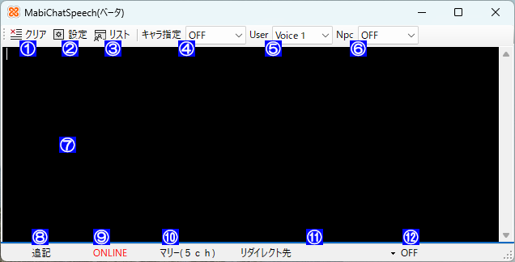
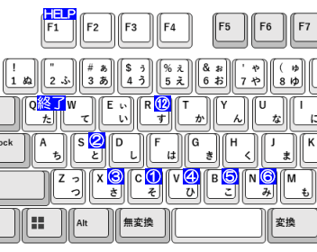

 
①表示クリア [C]
⑦表示エリアのテキストを消去する
②設定画面 [S]
表示エリアのフォント、文字色、背景色、音声など各種設定
③キャラ指定リスト [X]
キャラクタ選択リストの編集
④キャラ指定動作 [V]
キャラ指定リストで有効なキャラのみ適用
OFF : User、Npcの動作が有効
ChatOnly : チャット文字のみ、読上げは行わない
Voice : キャラ選択リストで設定した読上げ
⑤User動作 [B]
ユーザーキャラの設定
OFF : Userの動作が無効
ChatOnly : チャット文字のみ、読上げは行わない
Voice1 : Voice1に設定した内容で読上げ
Voice2 : Voice2に設定した内容で読上げ
⑥Npc動作 [N]
NPCキャラの設定
OFF : NPCの動作が無効
ChatOnly : チャット文字のみ、読上げは行わない
Voice1 : Voice1に設定した内容で読上げ
Voice2 : Voice2に設定した内容で読上げ
⑦表示エリア
チャットの表示 （オープンチャットのみ）
タイムスタンプ、キャラクタ種別、キャラクタ名、チャット内容
※ゲーム内のログより少し範囲が広め
※NPCは見えていないキャラもセリフが表示されます
⑧ログ保存動作 ⑨接続状態 ⑩接続先
情報表示
⑨接続状態はOFF,ON,CHARASEL,ONLINEのいずれかで赤字ならキャプチャ中
⑪リダイレクト先ウィンドウ
チャットテキストを送るウィンドウを指定する
対象ウインドウに対して文字を送るのであらかじめ
入力コントロールを選択しておく必要あり
⑫リダイレクトのON/OFF切替 [R]
ON OFF を切替 OFFの場合リダイレクトをしない